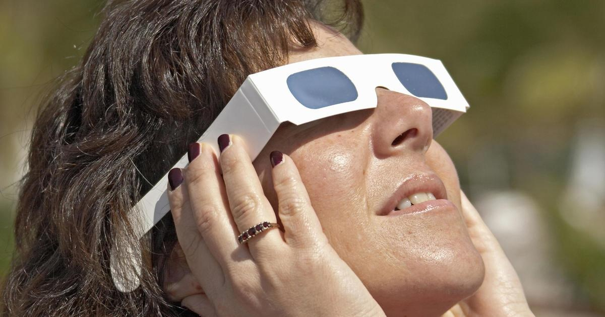

Doctors explain how to avoid burning your retinas during solar eclipsePITTSBURGH (KDKA) — We are less than three weeks away from the solar eclipse. But with that direct sunlight comes risks for your eyesight, and Dr. Ellen Butts wants your eyes to stay healthy. "Just like you wouldn't stare at the sun on a normal day, don't stare at the sun during the eclipse," said Dr. Butts, optometry division director and residency program director at the UPMC Vision Institute. "There's still rays that are shining through, and these are very damaging rays." KDKA-TV's Meghan Schiller talked with Dr. Butts about eye safety tips on the new rooftop terrace at the institute. When the eclipse rolls around in less than 20 days, Dr. Butts wants people to wear those ISO glasses for the entirety of the eclipse and resist the urge to take them off when darkness comes. "I wouldn't take the risk. I wouldn't even take the risk with children. WIth children, in general, I wouldn't even take the risk of using the lenses. There's a possibility that they'll look around the lens," she said. For children, try making a "They're able to view the sun, a shadow image of it onto a piece of paper, without looking directly at the sun," said Dr. Butts. But if you do stare directly into the sun without wearing brand-new ISO glasses, Dr. Butts said you risk burning your retinas, which will leave a damaged, blurred spot at the center of your eyes. "It's really difficult to say to a patient that this is something we don't really have any proven treatment for," Dr. Butts said. "And we can't tell you that it will improve." Erie is one of the spots in the path of totality with the best view. State police said they are preparing for up to 250,000 visitors. Police said they expect the biggest crowds to be at Presque Isle State Park, Erie, and every location on Lake Erie. |
 |